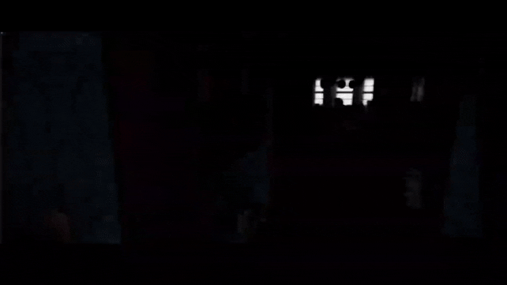
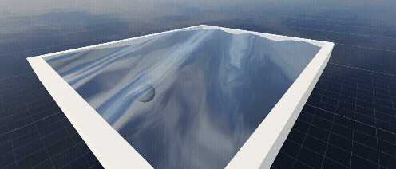

Holographic Scan Shader
Developed in Unreal Engine.
A sci-fi-inspired Unreal Engine shader featuring a beam-driven dissolve that reveals or removes geometry along a controllable vertical axis. Includes animated scanlines, emissive edge pulses, and procedural deformation, with a parameter-driven system for real-time control over colour, glow, and animation.
Video


Water Shader
Developed in Unity.
A physically-inspired water simulation in Unity using the Gerstner Wave formula to create realistic wave motion. Combines shader and C# implementations, with vertex displacement, normal recalculation, and depth, transparency, and lighting techniques to enhance visual realism and immersion.
Report